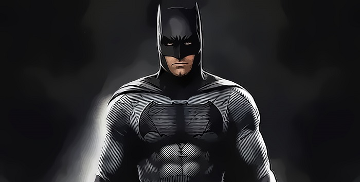

Sobre o Batman
Batman é um personagem fictícia e super-herói da editora norte-americana DC Comics, criado pelo escritor Bill Finger a partir dos esboços do desenhista Bob Kane, aparecendo pela primeira vez na revista Detective Comics #27 com o nome "Bat-Man".
Aliados do Batman
SuperMan
A DC criou muitos heróis populares , mas nenhum deles é tão inspirador quanto o Superman. Superman e Batman tiveram seus problemas, mas são apenas dois lados da mesma moeda. Ambos são homens que dão tudo de si para lutar pelos inocentes. De muitas maneiras, cada um precisa do outro, pois juntos eles formam uma equipe heroica quase perfeita.

Batgirl
Duke Thomas sempre foi inspirado pelo Batman, mas levou isso para o próximo nível quando adolescente. Ele começou uma gangue de rua baseada em Robin e ajudou a combater o crime em Gotham. Ele chamou a atenção do Batman e os dois se tornaram amigos. Isso custou a Duke, já que o Coringa tinha seus pais como alvo. Duke perdeu tudo o que conhecia e amava por causa de sua aliança com o Batman.
Vilões do Batman

Hera Venenosa
A Dra. Pamela Lillian Isley era uma botânica de Seattle, na verdade, uma das mais respeitadas cientistas em seu campo de atuação. Isso até que Jason Woodrue (também conhecido como Homem Florônico) conduzisse alguns experimentos em Pamela. Ao injetar toxinas em sua corrente sangüínea ela se tornou imune a todas as espécies de venenos, viroses, bactérias e fungos. Como "bônus", Pamela ainda ganhou um toque mortal. Basta um beijo seu e qualquer pessoa fica sob seu comando. Um pouco mais de contato e a pessoa cai dura a seus pés. Desnecessário dizer que isso fez com que a pobre doutora ficasse pinel e, como todo doidão do Universo DC que se preze, migrasse para Gotham City.
Pinguim
O Pinguim é descrito como sendo um homem baixo e corpulento, conhecido por ser um amante de aves e pelos seus guarda-chuvas especializados com alta tecnologia. Ladrão e mafioso, refere-se a si próprio como "cavalheiro do crime"; o seu negócio de clubes noturnos dão-lhe a fundos necessários para as suas atividades criminosas, nos quais o Batman usa por vezes para obter informações, como fonte do mundo do crime. De acordo com Kane, o personagem foi inspirado na mascote dos cigarros Kool; um pinguim com uma cartola e uma bengala. Finger pensou que a imagem de senhores das classes altas em smoking era reminiscente dos pinguins imperadores.